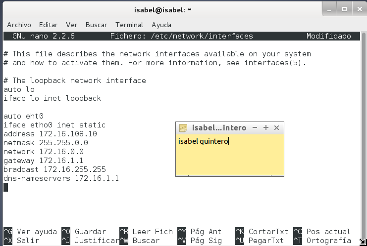

- Módulo: Aministración Sistemas Operativos
- Título del trabajo NFS
- Componentes del grupo: Isabel Quintero Sánchez
- Curso Académico: 2014/2015
- Fecha de entrega: 9 de Marzo de 2015.
Las máquinas virtuales que vamos a utilizar son:
Debemos poner las MV en "modo puente". Las máquinas que actuen de servidor o aquellas a las que nos vamos a conectar de forma repetida deben tener IP estática. Las IP's que podemos usar son (si somos el alumno del puesto XX):
Accedemos a Windows 2008 Server como nuestro servidor NFS. Como nombre de la máquina pondremos "Quintero", grupo de trabajo "Aula108" y la ip "172.16.108.10".
Luego procedemos a la instalación del servicio NFS, para ello agregamos el rol "Servidor de Archivos" y marcamos la casilla "Servidor para NFS".
A continuación, creamos la carpeta "c:\export\public". Picar en la carpeta botón derecho propiedades -> Compartir NFS, y configurarla para que sea accesible desde la red en modo lectura/escritura con NFS.
Creamos la carpeta "c:\export\private". Picar en la carpeta botón derecho propiedades -> Compartir NFS, y configurarla para que sea accesible desde la red sólo en modo sólo lectura.
Accedemos a Windows 7, como nombre de máquina pondremos "Quintero2", grupo de trabajo "Aula108" y la ip en DHCP.
Después de haber hecho la configuración de la máquina, instalamos el componente cliente NFS para Windows, para ello vamos a "Panel de Control -> Programas -> Activar o desactivar características de Windows".
Para iniciar el servicio NFS en el cliente, abrimos una consola con permisos de Administrador, y ejecutamos el siguiente comando: nfsadmin client start.
Ahora necesitamos montar el recurso remoto para poder trabajar con él. Para montar el recurso (esta vez no lo hacemos con Administrador) y escribimos: mount –o anon,nolock,r,casesensitive \\172.16.108.10\public *.
Hacemos las comprobaciones.
Creamos ficheros en el cliente y comprobamos si se han creado en el servidor. En el public se crean correctamente y en el private, como hemos configurado los permisos anteriormente, no nos deja crear nada.
Desmontamos la unidad.
Configuramos el archivo "/etc/network/interfaces" y en el archivo "/etc/hostname" ponemos el nombre del equipo como "quintero3".
Instalamos el servicio NFS a través del comando "apt-get install".
Creamos las carpetas "public" y "private" con sus respectivos permisos.

Vamos configurar el servidor NFS de la siguiente forma:
Iniciamos el servidor.
Hacemos la comprobación mostrando la lista de recursos exportados por el servidor NFS.
Configuramos el archivo "/etc/network/interfaces" y en el archivo "/etc/hostname" ponemos el nombre del equipo como "quintero4"
Instalamos el paquete "nfs-common".
Comprobamos el acceso desde el cliente al servidor mediante un ping.
También hacemos nmap + la ip del servidor: Sirve para escanear equipos remotos, y averiguar que servicios están ofreciendo al exterior.
showmount -e ip-del-servidor: Muestra la lista de recursos exportados por el servidor NFS.
Creamos las carpetas "public" y "private" montándolas en nuestras carpetas locales.
Ejecutar df -hT, y veremos que los recursos remotos están montados en nuestras carpetas locales. Observamos que solo se monta la primera que hemos ejecutado.
Acabamos de acceder a recursos remotos, realizando un montaje de forma manual, si queremos volver a acceder a los recursos remotos debemos repetir el proceso, a no ser que hagamos una configuración permanente o automática. Para configurar acciones de montaje autoḿaticos cada vez que se inicie el equipo, debemos modificar la configuración del fichero "/etc/fstab".
Hacemos la comprobación.